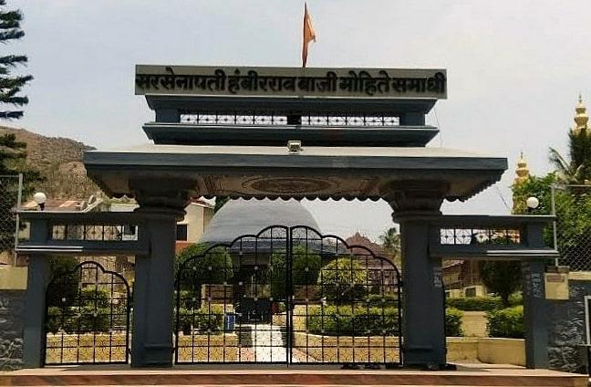
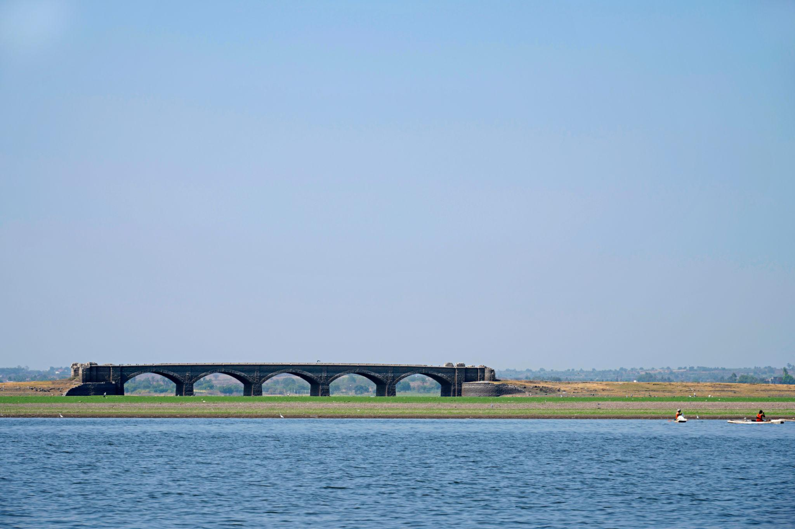
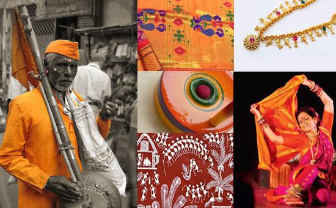
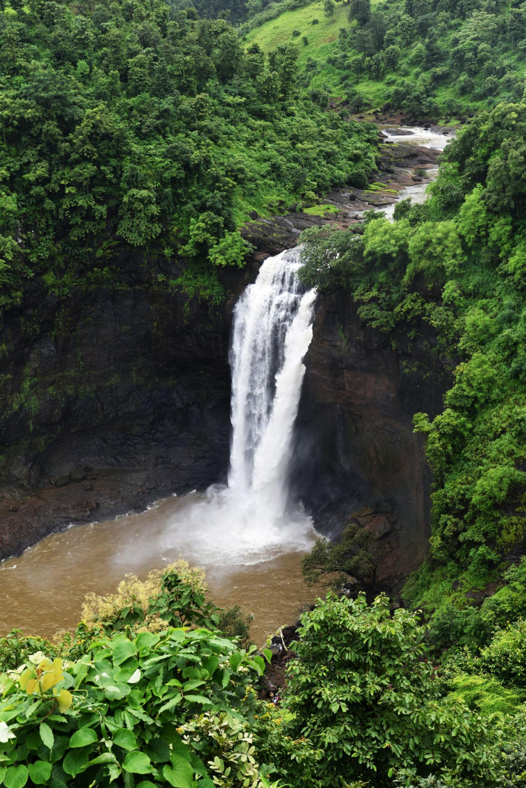
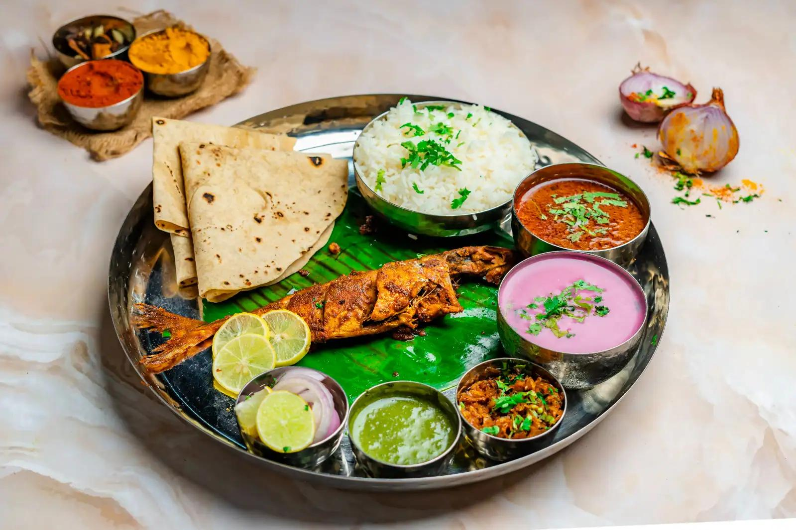
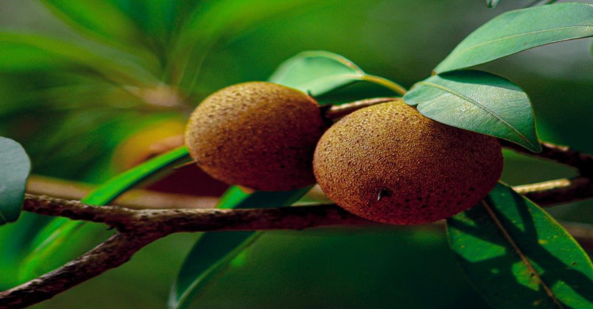
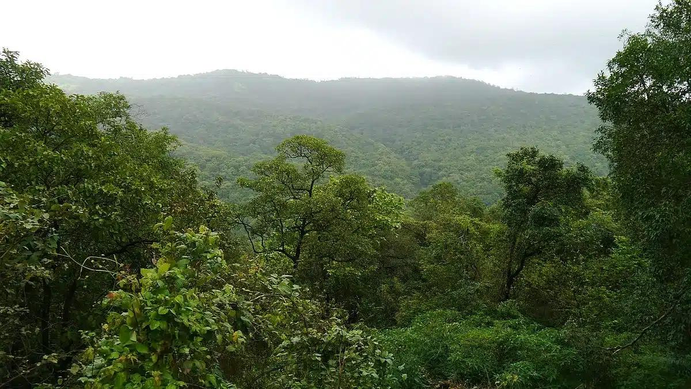
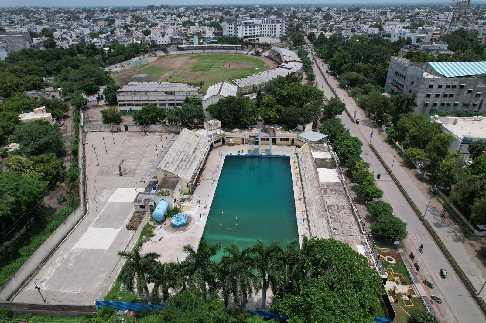

About

Parbhani, a major city in the Marathwada region of Maharashtra, India, is a culturally rich administrative hub steeped in history and spirituality. Originally known as Prabhavati Nagari, the "land of saints" beautifully blends a thriving agricultural economy with ancient heritage, vibrant traditions, and scenic natural environments.
- Location:Parbhani is located in the southeastern part of Maharashtra, India, within the fertile Marathwada region along the Godavari river basin.
- Famous as:It is famously known as Prabhavati Nagari and the Land of Saints, renowned for being the birthplace of Sai Baba (at Pathri) and home to the unique Parad Shivalinga (made of pure mercury).
History

Ruled by the Mauryas, the Satavahanas, and the Mughals, the region came under the Nizams of Hyderabad in 1724 before acceding to the Indian Union in 1948. The city bears a legacy deeply tied to its historical and archaeological importance.
- Parbhani's ancient roots trace back to the prehistoric Mulak kingdom and the legendary Vidarbha region. Over the centuries, it was ruled by powerful medieval dynasties like the Rashtrakutas and the Yadavas of Devagiri. Later, it became a strategic military hub prized for the Pathri Fort, eventually falling under the Nizam of Hyderabad's rule in 1724 after the Battle of Sakharkheda. After a brief period with Bombay State in 1956, it officially became part of Maharashtra in 1960.
Culture

Parbhani has a profoundly spiritual atmosphere, celebrating a mix of Hindu, Jain, and Sufi traditions. It is noted as the birthplace of the revered saint Sai Baba (in Pathri) and houses the famous Hazrat Turabul Haq Dargah.
- Main Festivals:Major celebrations include the grand Hazrat Turabul Haq Dargah Urs, alongside popular festivals like Ganesh Chaturthi, Diwali, and Eid.
- Traditional Arts:The city showcases beautiful Warli painting and Ganjifa card art, alongside traditional folk dances like Lavani and Gondhal.
- Language:Marathi is the official and most widely spoken language, alongside Urdu and Hindi.
Tourism

Major attractions include the Mrityunjaya Pardeshwar Temple, featuring the largest mercury (Parad) Shivalinga in India. Visitors also frequent the Nemgiri Jain Caves, Yeldari Dam, and the scenic island of Jambhul Bet.
- Yeldari Dam Reservoir: This massive water body is a popular destination for family picnics, camping, and basic water-based recreational sports.
- Jambhul Bet Island: A beautiful biodiversity island located in the middle of the Godavari River that you must reach by boat, making it perfect for boating, trekking, and nature trails.
- Gandhi Park Stadium Complex: The city's main sports hub where tourists can watch local cricket matches or practice sports and fitness activities.
Famous Food

The local cuisine represents classic Marathwada fare. It heavily features staples like jowar and bajra rotis, spicy lentil dishes, and delicious street food items served fresh in local squares.
- Famous Food:The city is famous for spicy Marathwada Thali meals with jowar bhakri (sorghum flatbread), pithla (chickpea flour curry), and hot mutton rassa.
- Local Specialty:The absolute local specialty is Sushila, a delicious savory snack made from puffed rice, green chilies, onions, and peanuts.
Economy

The district's economy is primarily agricultural. It is a major commercial center for cotton ginning and pressing, alongside the production of sugarcane, sorghum, and millet.
- Key Industries:The region is heavily industrialised around agriculture, featuring major cotton ginning and pressing factories, sugar mills, and oil seed processing plants.
- Main Crops:Farmers primarily grow cotton, soybean, jowar (sorghum), and sugarcane in the fertile soil of the district.
Environment

Located on an upland plateau south of the Dudna River, Parbhani features fertile soil ideal for farming. Local educational initiatives also promote green initiatives like student-managed botanical gardens across schools.
- Climate:The region experiences a tropical savanna climate with hot summers, a rainy monsoon season from June to September, and mild winters.
- Key Rivers:The Godavari River flows through the southern border, while the Dudhna River passes right through the central part of the district.
- Protected Areas:While there are no major national parks within the district lines, the Yeldari Dam Reservoir area and Jambhul Bet serve as locally protected green spaces and bird sanctuaries.
Sports

Leisure and sports are traditionally centered around local parks like Shivaji Udyan, while school-level and regional competitions for cricket, wrestling, and traditional rural sports remain popular pastimes.
- Traditional Sports:The region actively keeps classic Indian sports alive, especially mud wrestling (Kushti), Kabaddi, and Kho-Kho.
- Focus:Local sports clubs focus heavily on youth development and training athletes to compete in state-level rural tournaments.